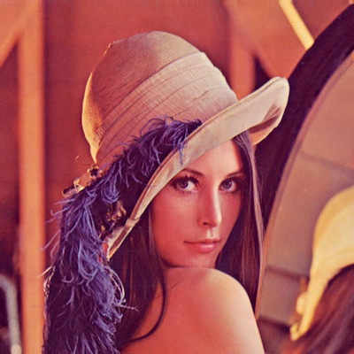

filtros image
-
- pixel to pixel:
- grayscale
- sepia
- thresholding-128
- invert
- saturation
- red
- green
- blue
-
- edge/line detection:
- roberts
- sharpen
- sobel y
- sobel x
- highpass
- laplacian
- gaussian
- prewitt y
- prewitt x

Drag and drop filters here
remove all filters
Upload an image from your desktop and select a filter from the select: